⚠️ ESCAPE RISK — บุคคลต้องสงสัยมีความเสี่ยงหลบหนีสูง
นาย CHEN TAO (陈涛) อายุ 56 ปี สัญชาติสาธารณรัฐประชาชนจีน ลักษณะหัวล้าน รูปร่างสมส่วน เข้ามาในราชอาณาจักรโดยใช้วีซ่าประเภท Thailand Privilege Card (PE) ซึ่งจะหมดอายุวันที่ 10 พฤศจิกายน 2569 มีพฤติกรรมเปลี่ยนที่พักอาศัยบ่อยครั้งและหลบเลี่ยงการติดตาม ใช้บัญชี WeChat ID: wxid_zdbqign6qjlc12 (ชื่อในระบบ: 平安吉祥) ตรวจพบที่อยู่ IP ล่าสุดบริเวณ Supalai Oriental Sukhumvit 39 / Noble Be 33 เขตวัฒนา กรุงเทพมหานคร
CNY
LI Bin — ปล่อยตัวแล้ว
คาดอยู่ในไทย
ถ.สุขุมวิท 33 วัฒนา กทม.
ดินแดง กทม. 10400
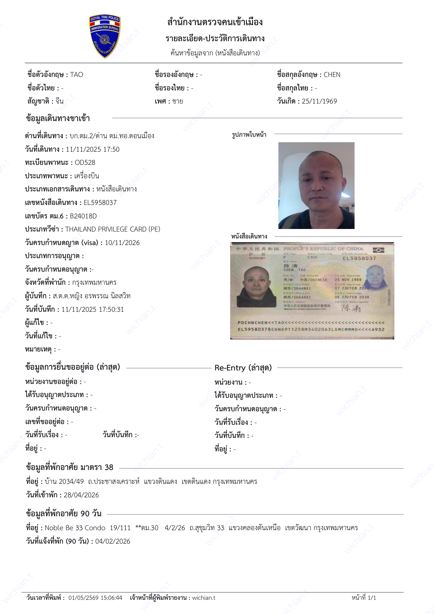
| ชื่อ (อังกฤษ) | CHEN TAO |
| ชื่อ (จีน) | 陈涛 |
| วันเกิด | 25 พฤศจิกายน 2512 (อายุ 56 ปี) |
| สัญชาติ | สาธารณรัฐประชาชนจีน |
| ถิ่นกำเนิด | มณฑลส่านซี (SHAANXI) |
| เพศ | ชาย |
| หนังสือเดินทาง | EL5958037 |
| วันหมดอายุ หนังสือเดินทาง | 06 กุมภาพันธ์ 2577 (2034) |
| บัตรประชาชนจีน | 610113196911250050 |
| ประเภทวีซ่า | Thailand Privilege Card (PE) |
| วีซ่าหมดอายุ | 10 พฤศจิกายน 2569 (2026) |
| ระดับความลับ | ระดับ 4 |
| มาตรการที่ต้องดำเนินการ | ห้ามเข้ามาในราชอาณาจักร / ไม่อนุญาตให้พำนักอาศัย |
| โทรศัพท์ราชการ | 022861890 |
| วันออกหมาย | 10 เมษายน 2569 (2026) |
สำนักงานตำรวจแห่งชาติ มีหนังสือที่ 0002.3/2289 ลงวันที่ 23 มีนาคม 2569
โดยสถานเอกอัครราชทูตสาธารณรัฐประชาชนจีนประจำประเทศไทย มีหนังสือ DLO077/26 ลงวันที่ 9 มีนาคม 2569
แจ้งข้อมูลเกี่ยวกับ นาย CHEN TAO
ซึ่งถือหนังสือเดินทาง EL5958037 อันได้ถูกยกเลิกแล้วเมื่อวันที่ 12 กุมภาพันธ์ 2569
โดยมีความผิดฐานอำพรางและปกปิดทรัพย์สินที่ได้มาจากการกระทำความผิด
ถูกออกหมายจับโดยกระทรวงความมั่นคงสาธารณะ เมืองหลานโจว มณฑลกานซู ลงวันที่ 11 กุมภาพันธ์ 2569
ร่วมกับผู้ต้องหาอื่นในการกระทำความผิดฐานฉ้อโกงสถาบันการเงิน Lanzhou Bank
และโอนเงินผ่านบริษัทบังหน้าเพื่อฟอกเงิน รวมมูลค่าประมาณ 650 ล้านหยวน
บุคคลดังกล่าวมีลักษณะต้องห้ามมิให้เข้ามาในราชอาณาจักรตามมาตรา 12(7)
แห่งพระราชบัญญัติคนเข้าเมือง พ.ศ. 2522
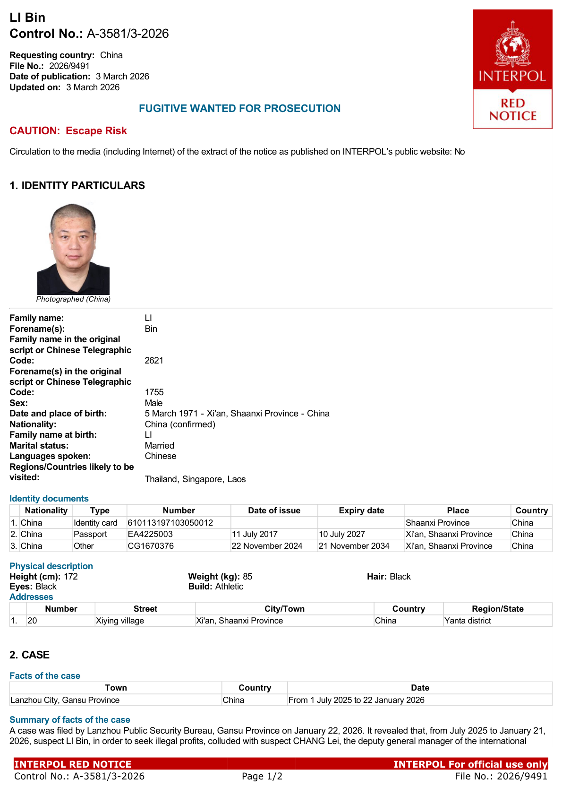
| ชื่อ | LI Bin (李彬) |
| วันเกิด | 5 มี.ค. 1971 — ซีอาน, ส่านซี |
| พาสปอร์ต | EA4225003 (หมด 10/07/2027) |
| ข้อหา | ฉ้อโกงเลตเตอร์ออฟเครดิต |
| โทษสูงสุด | จำคุกตลอดชีวิต |
| สถานะ | อยู่ระหว่างการติดตาม |
| พื้นที่เสี่ยง | ราชอาณาจักรไทย, สิงคโปร์, สาธารณรัฐประชาธิปไตยประชาชนลาว |
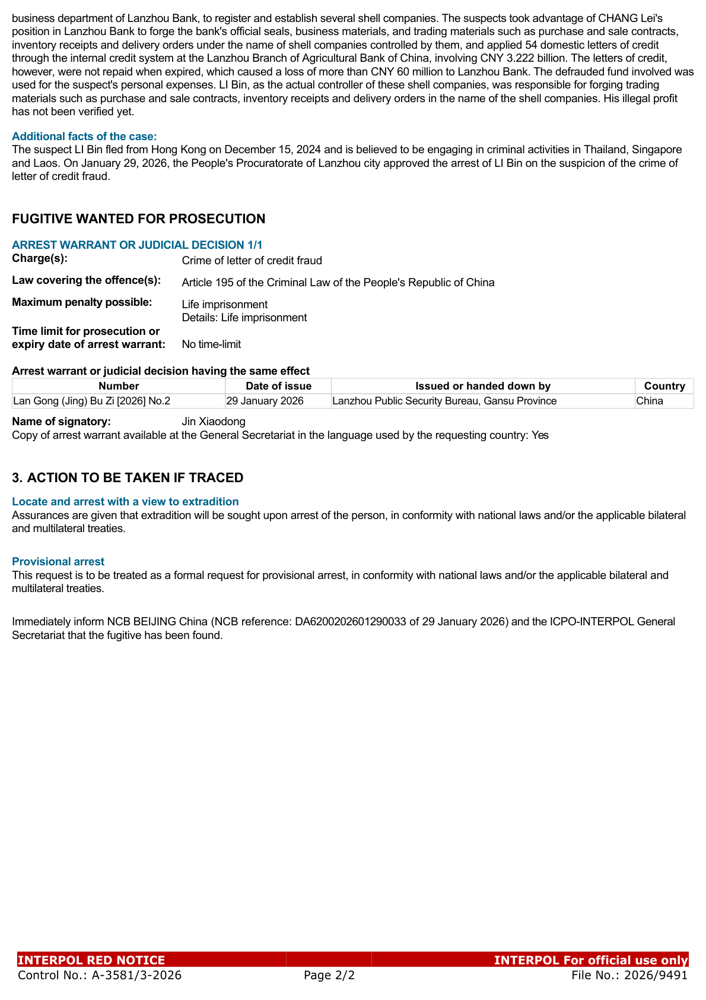
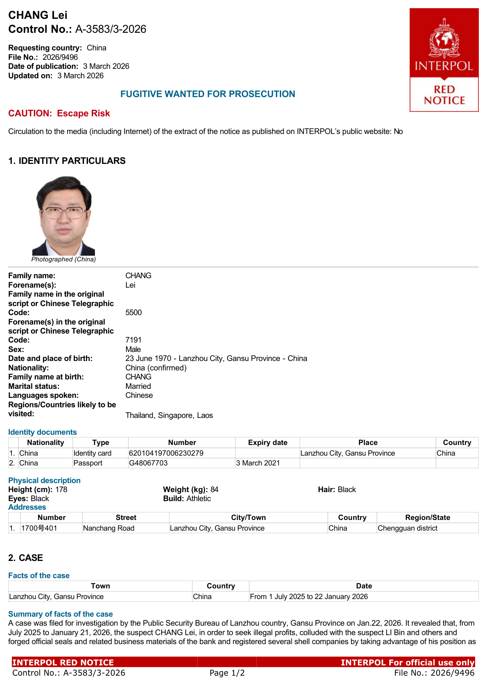
| ชื่อ | CHANG Lei (苌雷) |
| วันเกิด | 23 มิ.ย. 1970 — หลานโจว, กานซู |
| พาสปอร์ต | G48067703 (หมด 3/03/2021) |
| ตำแหน่ง | รองผจก.ฝ่ายต่างประเทศ Lanzhou Bank |
| ข้อหา | ฉ้อโกงเลตเตอร์ออฟเครดิต |
| โทษสูงสุด | จำคุกตลอดชีวิต |
| สถานะ | อยู่ระหว่างการติดตาม |
| พื้นที่เสี่ยง | ราชอาณาจักรไทย, สิงคโปร์, สาธารณรัฐประชาธิปไตยประชาชนลาว |
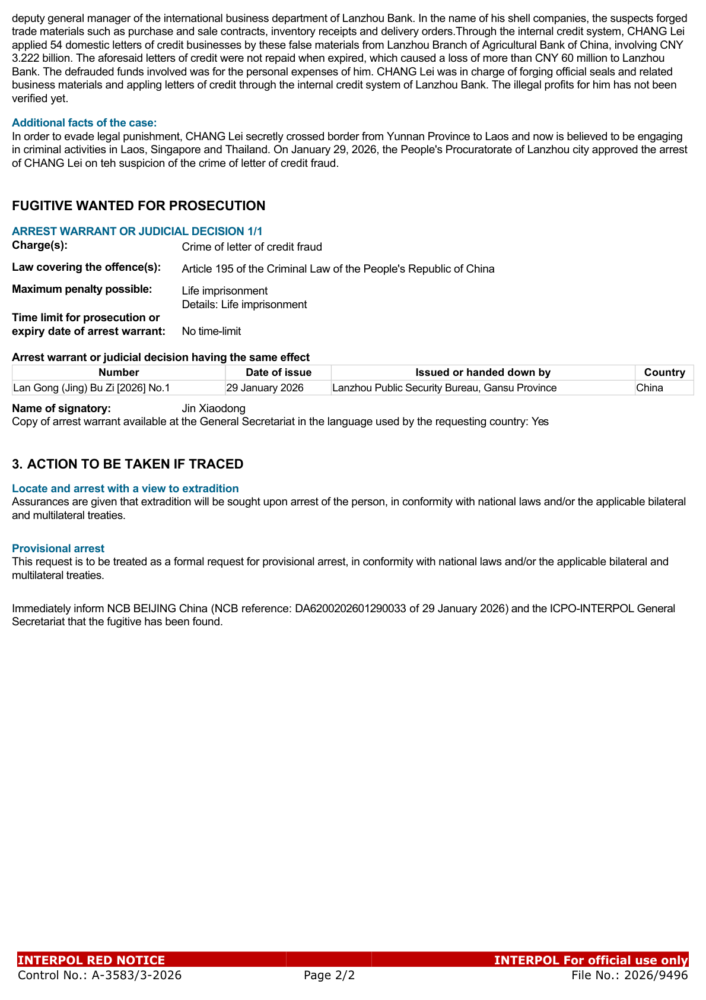
กลุ่มผู้ต้องหาสมคบกันจัดตั้ง บริษัทบังหน้าหลายแห่ง ใช้ตำแหน่ง CHANG Lei ใน Lanzhou Bank ปลอมแปลงตราประทับ เอกสารทางการค้า ยื่นขอ L/C กับ Agricultural Bank of China 54 ฉบับ มูลค่า 3,222 ล้านหยวน
เคยถูกจับกุมในประเทศมาเลเซีย ต่อมาได้รับการปล่อยตัว
ปัจจุบันสืบทราบว่ากลับเข้ามาพำนักในราชอาณาจักรไทย
ถ.สุขุมวิท 33 คลองตันเหนือ วัฒนา กทม.
ผู้แจ้ง: สุทิรา วัตนวัตน์ โทร 081-259-8964
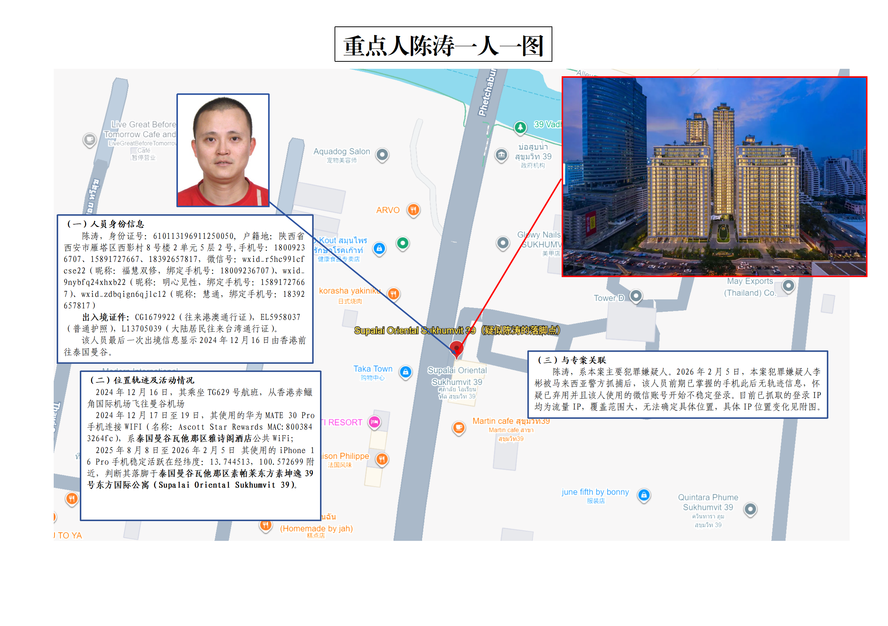
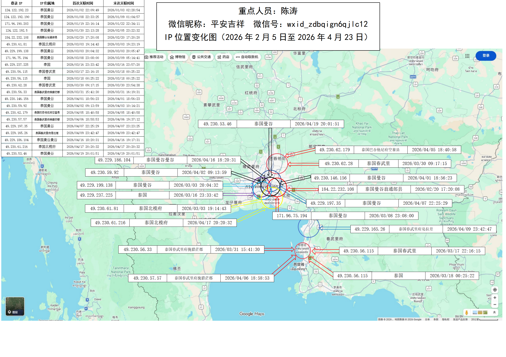
ชื่อเล่น: 平安吉祥
13°44'41"N 100°34'22"E
MAC: 800384 3264Fc (Ascott WiFi)
ใกล้ Supalai Oriental Sukhumvit 39
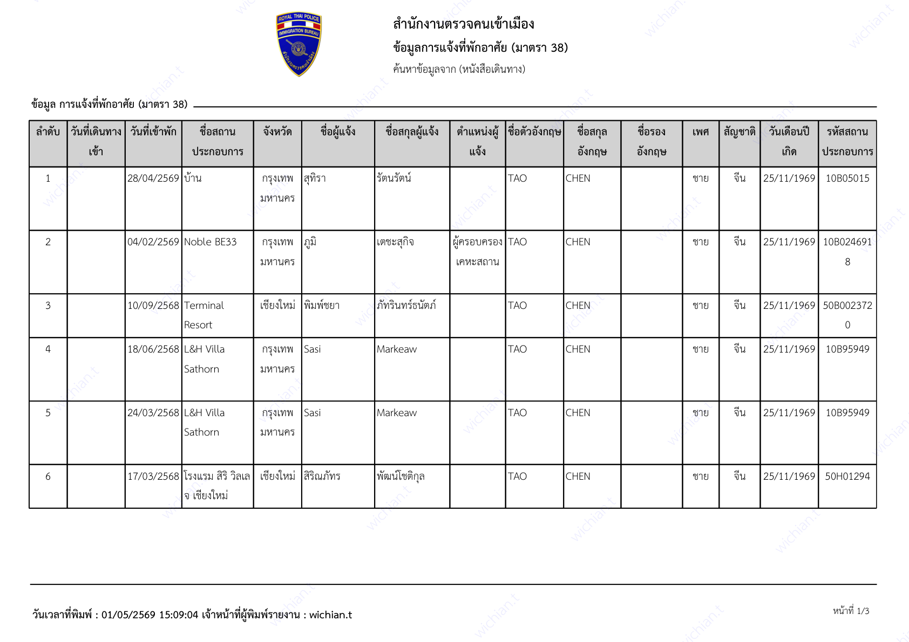
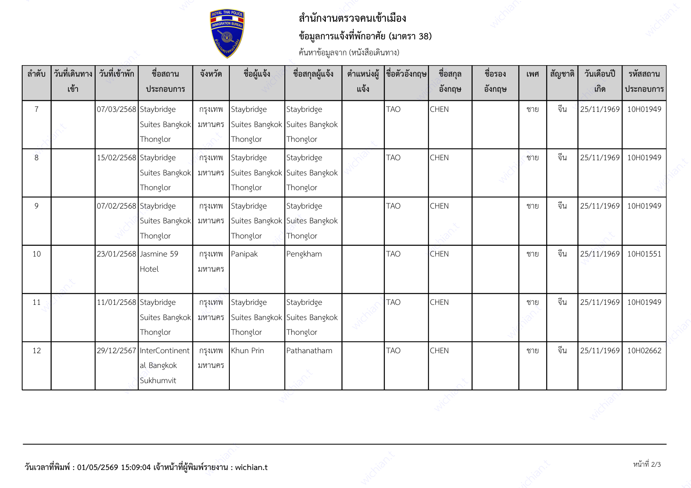
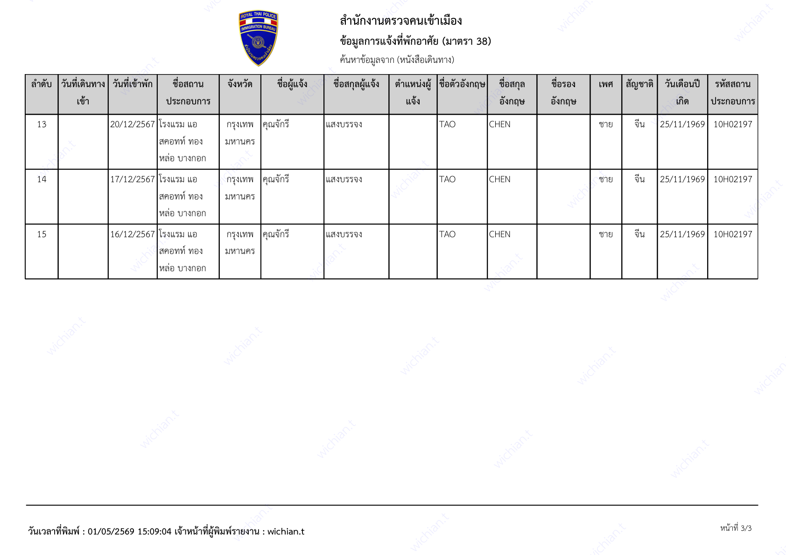
⚠️ เส้นทางหลบหนีที่ต้องเฝ้าระวังเป็นพิเศษ
เส้นทางที่ต้องระวัง ได้แก่ เชียงแสน → สามเหลี่ยมทองคำ → สาธารณรัฐประชาธิปไตยประชาชนลาว และ ท่าอากาศยานสุวรรณภูมิ → กัวลาลัมเปอร์ (สายการบิน MH) ซึ่งเป็นเส้นทางเดียวกับที่กลุ่มผู้ต้องหาใช้หลบหนีออกจากสาธารณรัฐประชาชนจีน ขอให้เจ้าหน้าที่เฝ้าระวังทั้งสองเส้นทางโดยเคร่งครัด
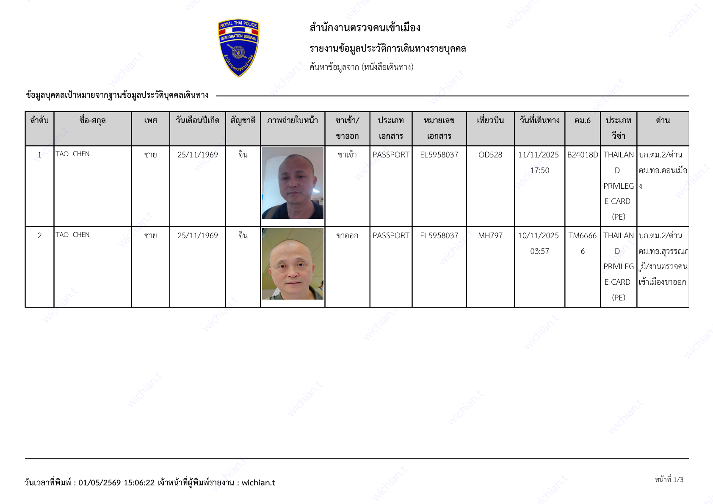
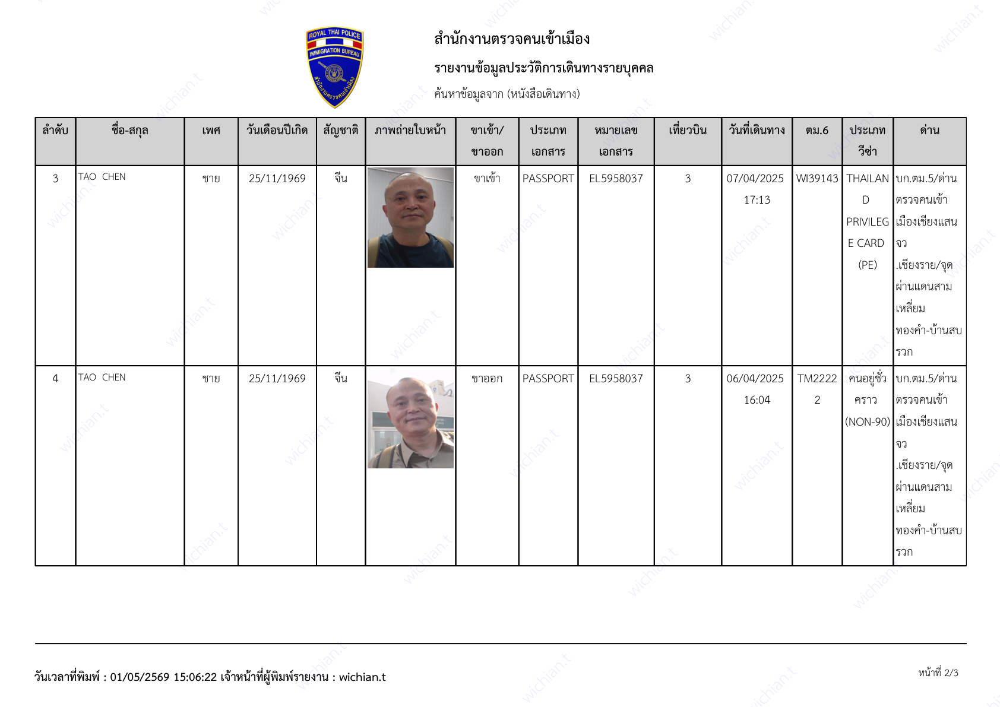
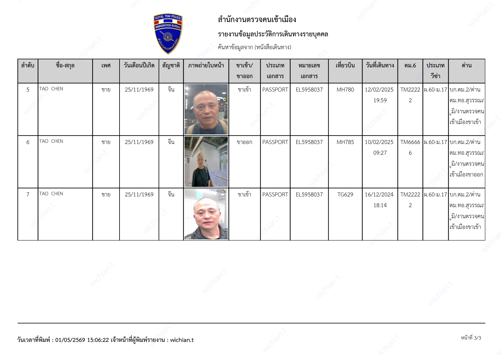
บทบาท: ควบคุมบริษัทบังหน้า รับและโอนเงินฟอกเงิน มูลค่า ~650 ล้านหยวน
WeChat: wxid_zdbqign6qjlc12
บัตรประชาชนจีน: 610113197103050012
บทบาท: หัวหน้าเครือข่าย ควบคุมบริษัทบังหน้า ประสานงานการเงิน
ลำดับเหตุการณ์:
• หลบหนีออกจากฮ่องกงเมื่อวันที่ 15 ธันวาคม 2567
• ถูกจับกุมในราชอาณาจักรไทย (L&H Villa Sathorn กทม.)
• ถูกส่งตัวและจับกุมในประเทศมาเลเซีย
• ได้รับการปล่อยตัวจากมาเลเซีย — ปัจจุบันสืบทราบว่าอยู่ในไทย
บทบาท: รองผู้จัดการฝ่ายต่างประเทศ ธนาคารหลานโจว (Lanzhou Bank)
หลบหนีจากมณฑลยูนนาน → สปป.ลาว → ราชอาณาจักรไทย/สิงคโปร์
บทบาท: น้องชายของนาย LI Bin (李彬) ผู้ประสานงานภายในเครือข่าย
ที่พักอาศัย: คอนโดมิเนียม One9Five ถนนพระราม 9 กรุงเทพมหานคร
บทบาท: น้องเขยของนาย LI Bin (李彬) ผู้ร่วมเครือข่าย
เส้นทางเดินทาง: เข้าราชอาณาจักรไทยผ่านด่านเชียงแสน → บริเวณสามเหลี่ยมทองคำ
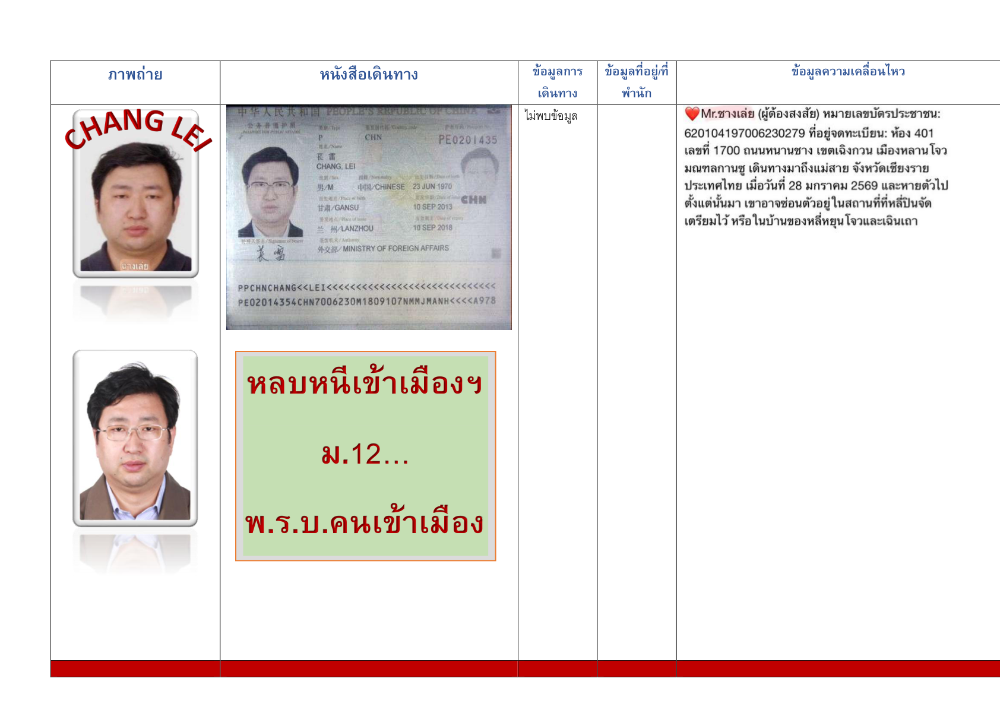
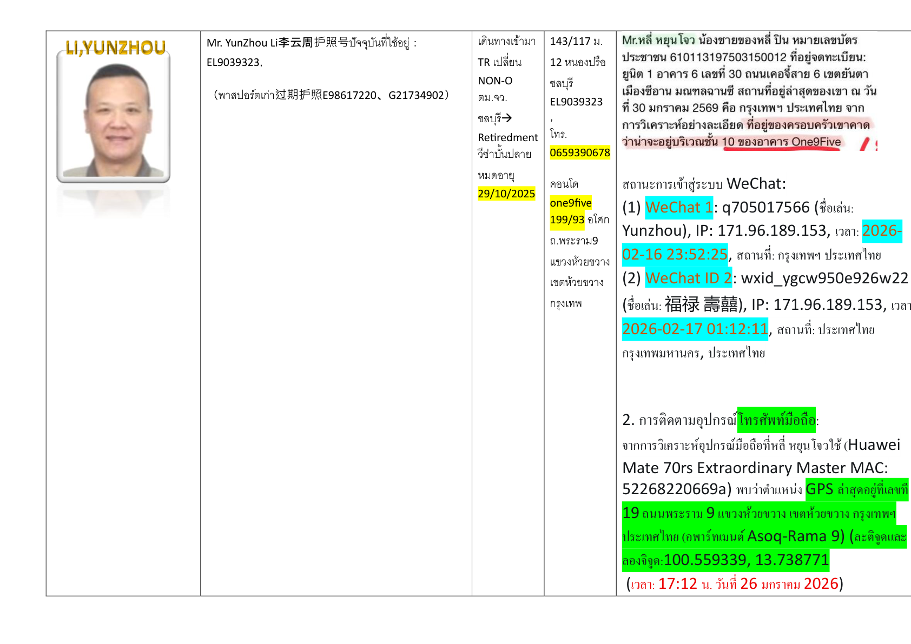
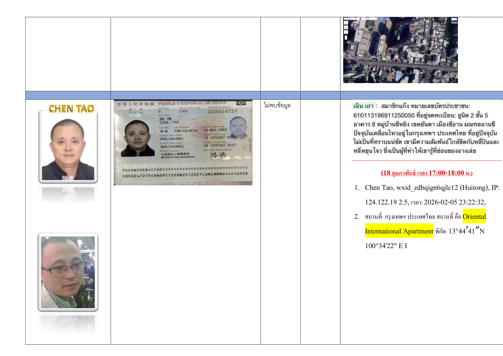
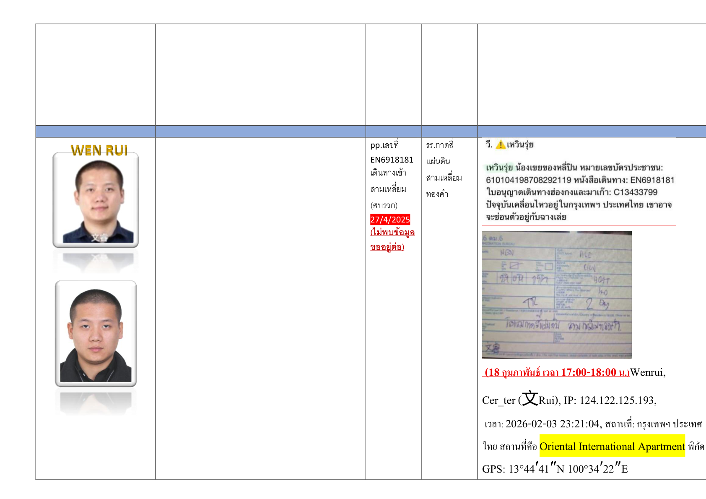
| ผู้ต้องหา (หมายแดง) | ความสัมพันธ์ | บุคคลที่คาดอยู่ด้วย | ตำแหน่งที่น่าจะพบ | ระดับความเชื่อมั่น |
|---|---|---|---|---|
| 🔴 LI Bin (李彬) A-3581/3-2026 = LI Pin คนเดียวกัน |
หัวหน้าเครือข่าย น้องชาย LI Yunzhou พี่เขย WEN Rui |
• CHEN TAO — ผู้รับ-โอนเงิน • LI Yunzhou — น้องชาย • WEN Rui — น้องเขย |
📍 สุขุมวิท/ทองหล่อ กทม. 📍 Oriental Intl Apt 📍 L&H Villa Sathorn |
สูง |
| 🔴 CHANG Lei (苌雷) A-3583/3-2026 |
อดีตธนาคาร Lanzhou Bank |
• CHEN TAO — ผู้สมคบหลัก • LI Bin — ผู้ร่วมวางแผน |
📍 สุขุมวิท กทม. (คาด) 📍 สิงคโปร์ (คาด) 📍 เส้นทางลาว |
ปานกลาง |

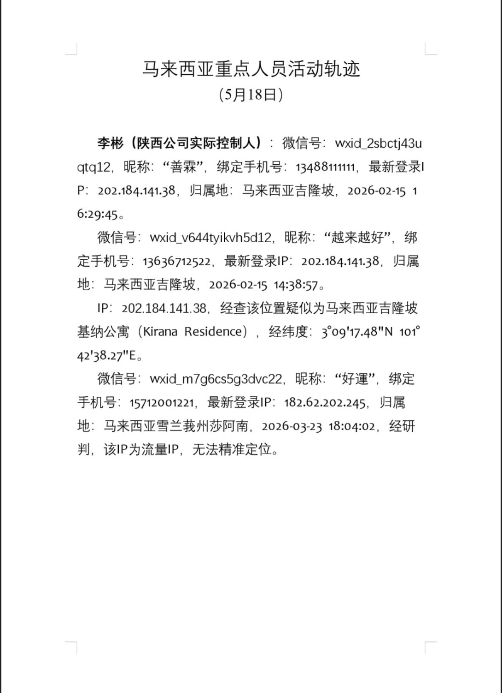
| ชื่อ | WeChat / IP | ที่ตั้งล่าสุด | พิกัด | เวลา |
|---|---|---|---|---|
| CHEN TAO | wxid_zdbqign6qjlc12 124.122.19.2 | Oriental Intl Apt / Supalai Oriental 39 | 13°44'41"N 100°34'22"E | 18 ก.พ. 2026 17:00–18:00น. |
| LI YUNZHOU | q705017566 171.96.189.153 | One9Five คอนโด ถ.พระราม 9 | 100.559339, 13.738771 | 26 ม.ค. 2026 17:12น. |
| WEN RUI | Cer_ter 124.122.125.193 | Oriental International Apartment | 13°44'41"N 100°34'22"E | 3 ก.พ. 2026 23:21น. |
| LI BIN (= LI Pin) 🔴 A-3581 | ⚠️ ปล่อยตัวแล้ว คาดอยู่ในไทย | wxid_2sbctj43u 202.184.141.38 | Kirana Residence กัวลาลัมเปอร์ (ข้อมูลเก่า — ปัจจุบันคาดว่าอยู่ในราชอาณาจักรไทย) | 3°09'17.48"N 101°42'38.27"E | 15 ก.พ. 2026 16:29น. |
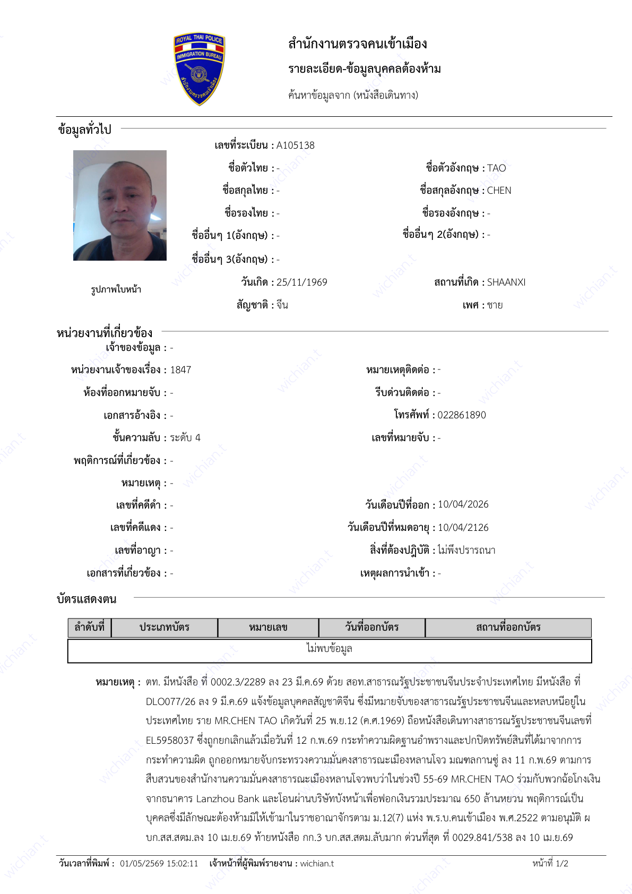